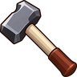

Gold Axe
Obtaining
- Bought from Toolmaker Tello for 960 gold
- Bought from Toolmaker Nicolas for 960 gold
- Bought from Toolmaker Gudrid for 960 gold
- Bought from Toolmaker Leif for 960 gold
- Bought from Toolmaker Bjarni for 960 gold
- Bought from Garrick the Smith for 650 gold
- Bought from Toolmaker Alvaro for 960 gold
- Made with Blacksmithing level 35 at a Anvil
Creation
| Skill | Makes | Needs | Where | Tool |
|---|---|---|---|---|
| Blacksmithing 35 | 1 | 2 × Gold Bar, 1 × Willow Logs | Anvil |  Blacksmith Hammer |